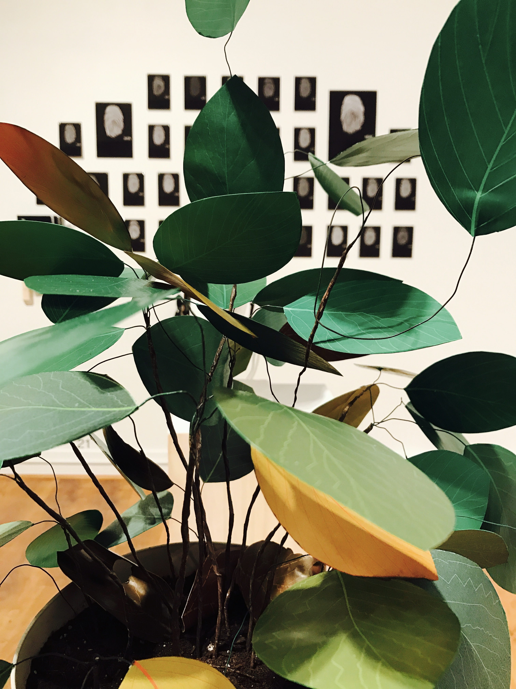
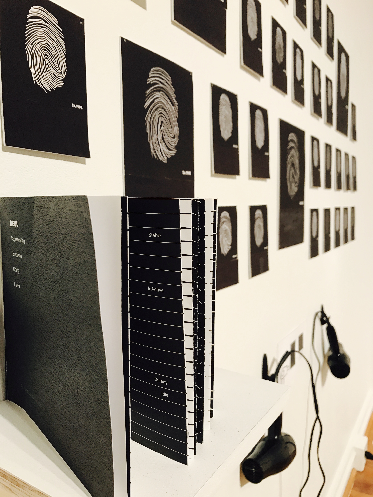
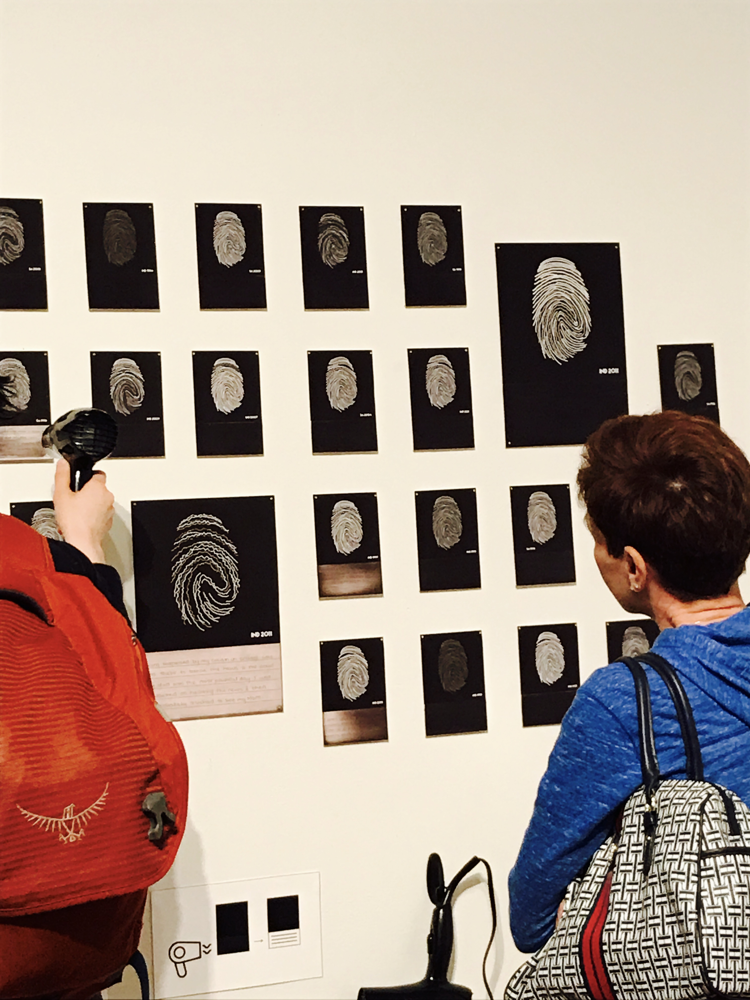
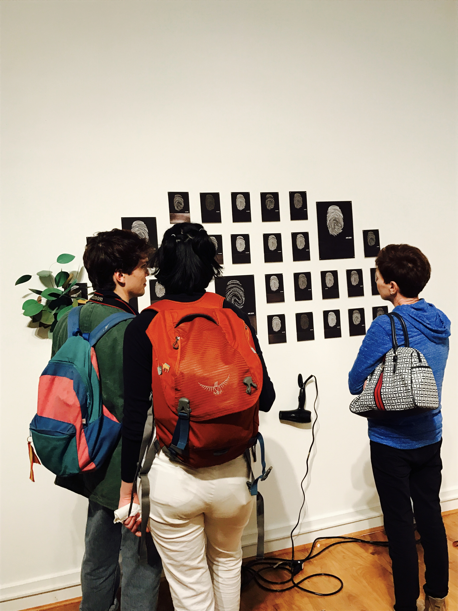
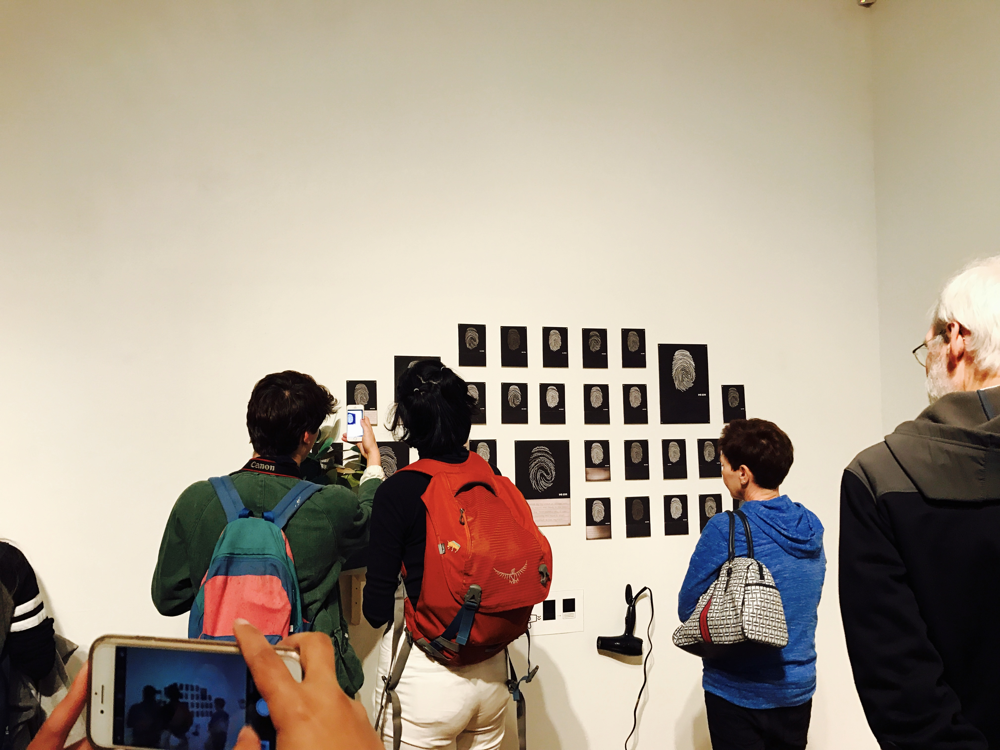
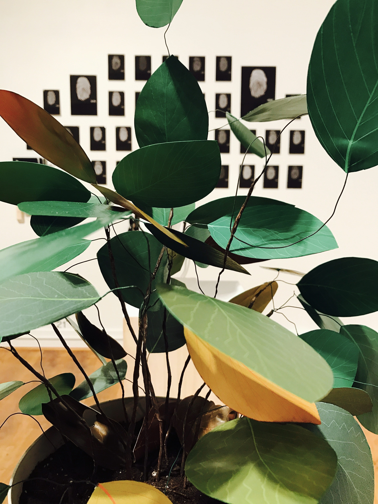
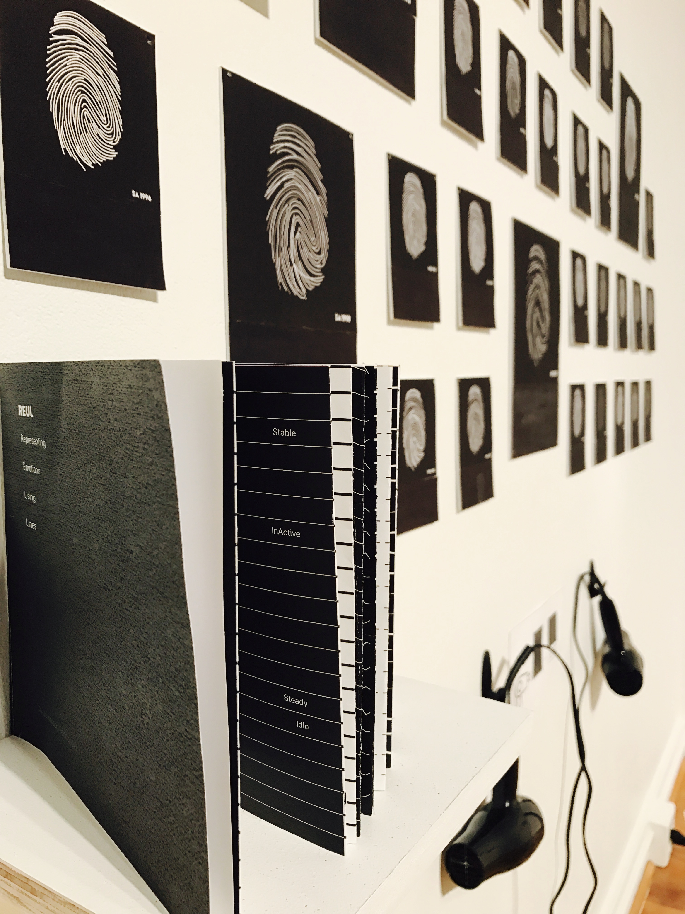
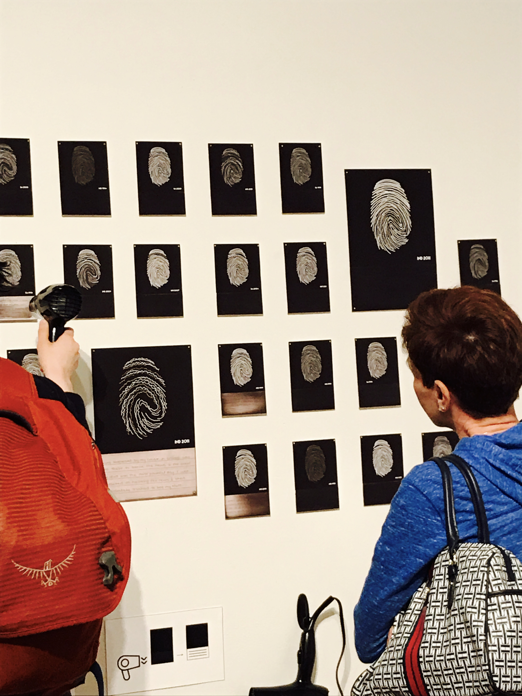
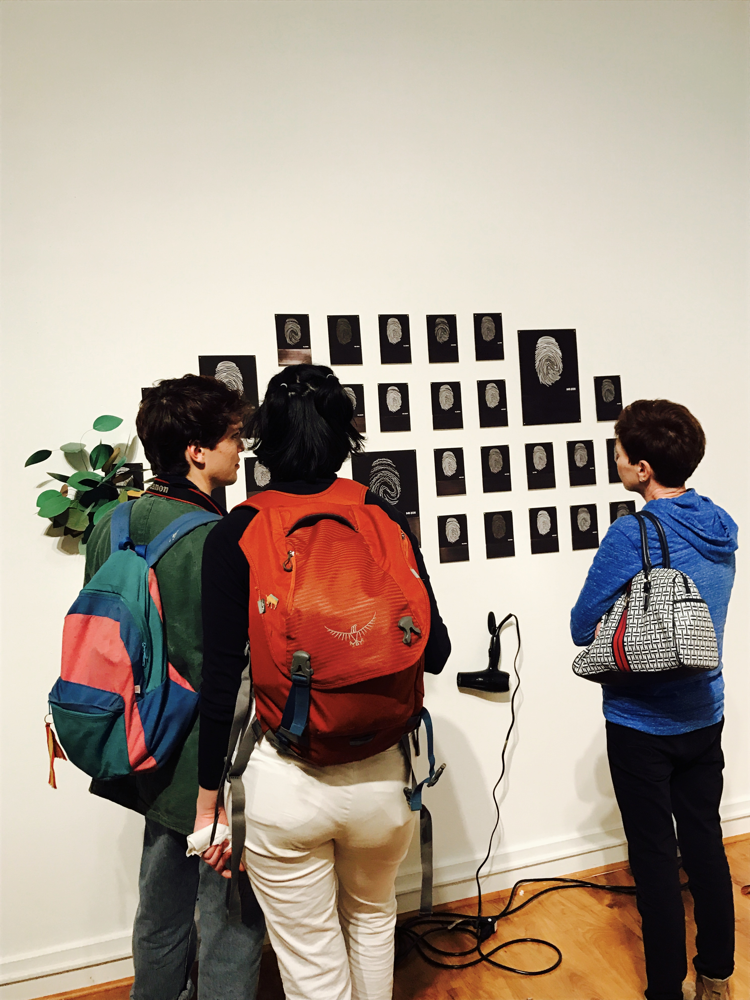
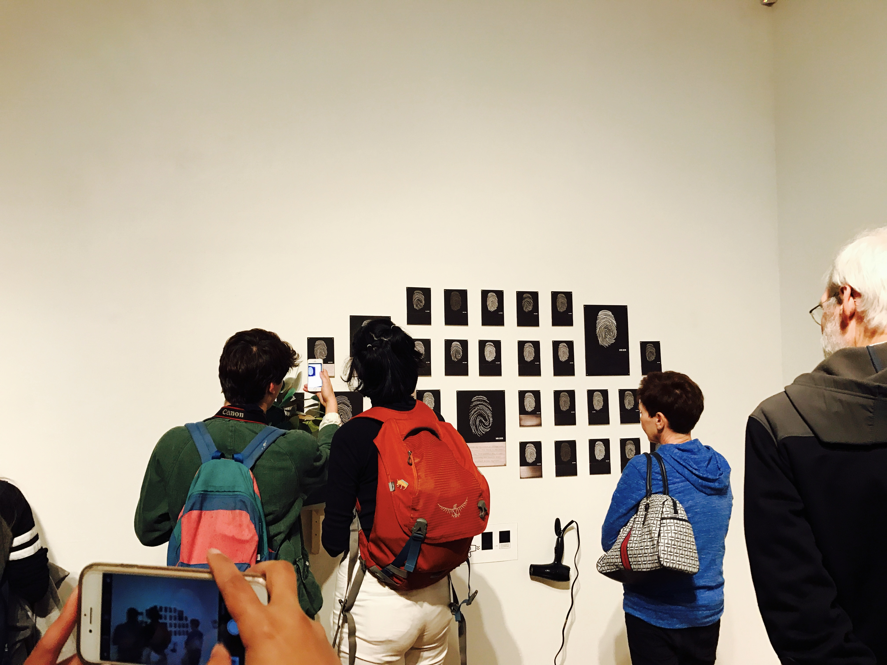

YOKU - Merchant Application
The Goal is to provide merchants a way to broadcast Coupon deals to their customers even at real time. The process needs to be kept minimal as to not burden the merchants with another task besides their daily business.
Reul
Representing Lines Using Patterns
Created to visualize emotions for people from all over the world to understand the most integral part of a story.
Prime Objective:
I choose to take up the challenge to communicate emotions with some form of visual representation. Rather than focusing on an explicit narrative, my design uses abstract linear forms to create a universal language that conveys these emotions that we all experience. The linear forms are created using lines which represent a meaning based on the length, thickness, intensity and occurrences.
I was always fond of creating doodles based on stories from my past. I would create these doodles using the striking objects from that moment or objects from the location I was present in at that moment. What lacked in these doodles were the emotions which was the key element I wanted to represent.
YOKU - Merchant Application
The Goal is to provide merchants a way to broadcast Coupon deals to their customers even at real time. The process needs to be kept minimal as to not burden the merchants with another task besides their daily business.
Format
A fingerprint is considered unique and one thing that identifies a person. Hence, I believed my own fingerprint would be a perfect to represent stories from my past just by altering them based on the emotion of the respective story. I chose to keep the narrative of the story hidden because I wanted it to act secondary to the patterned lines.
Gallery Photos
 








